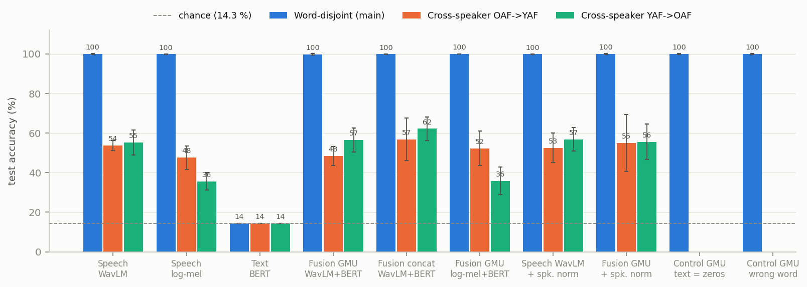
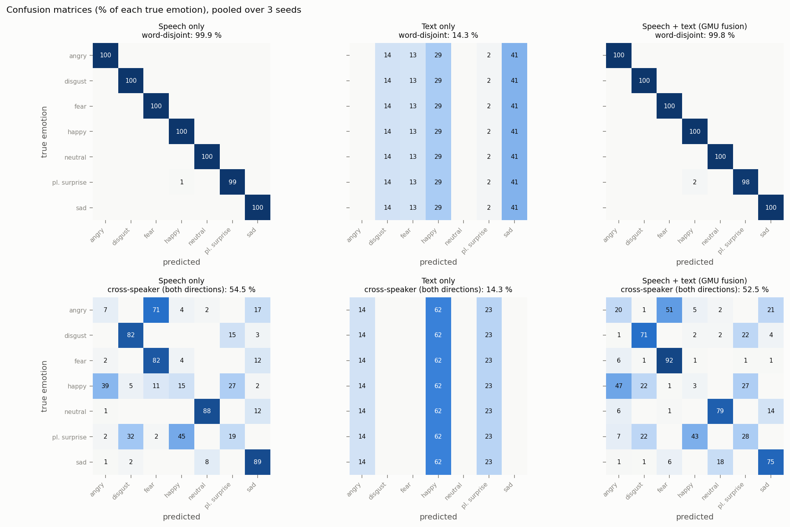
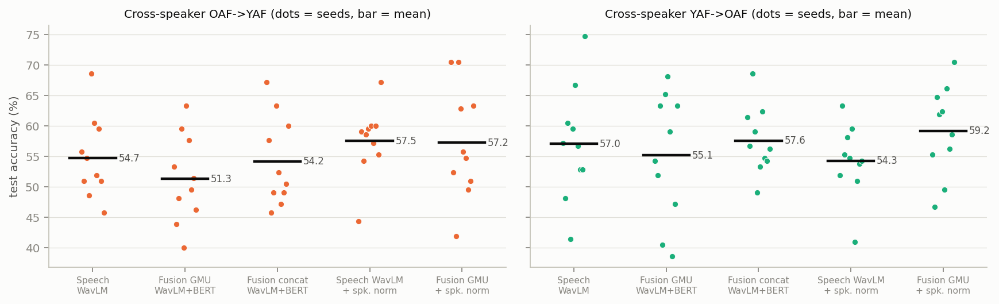
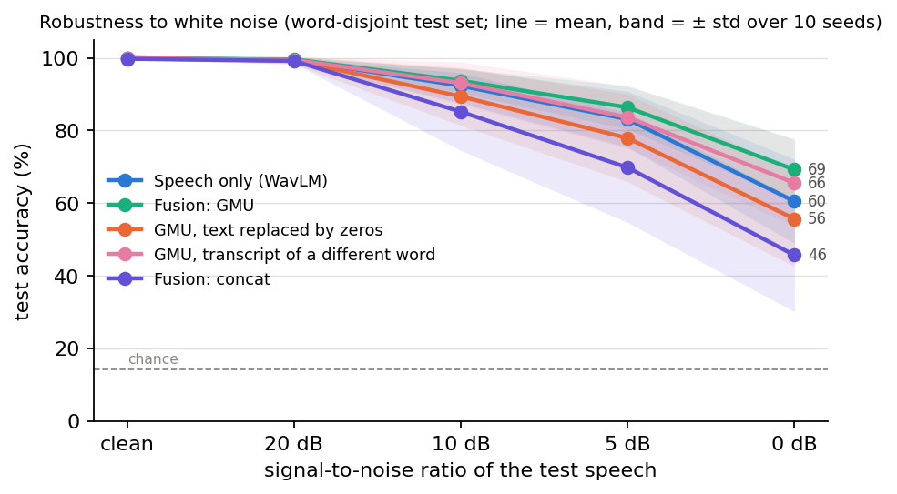
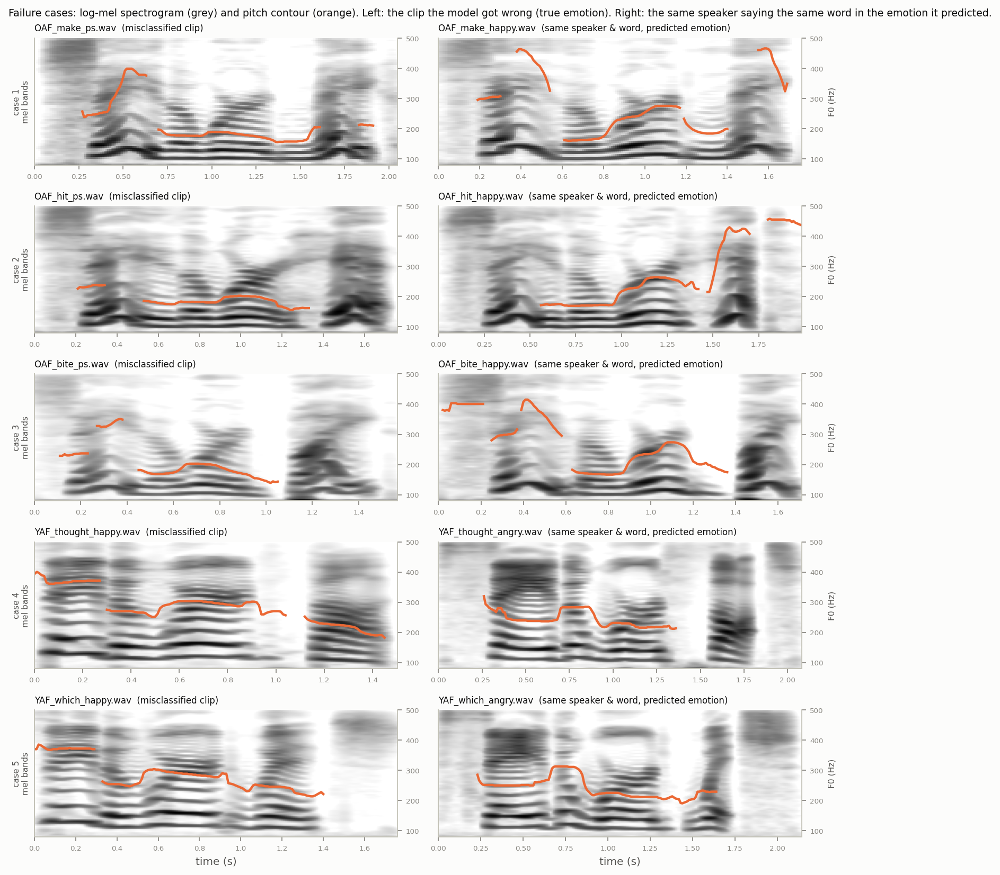
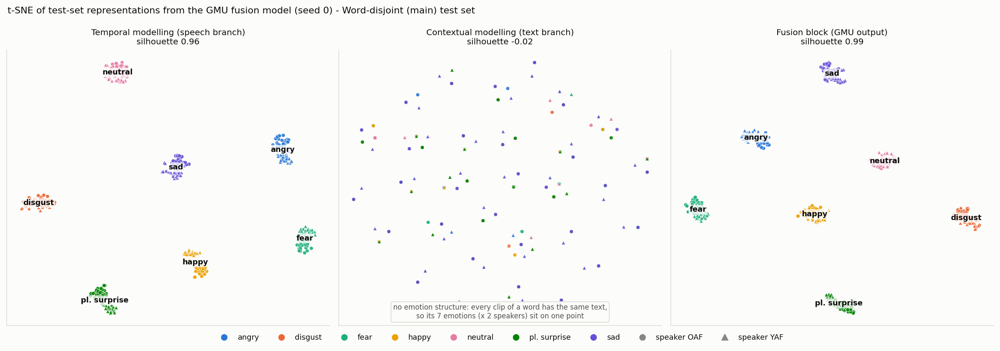
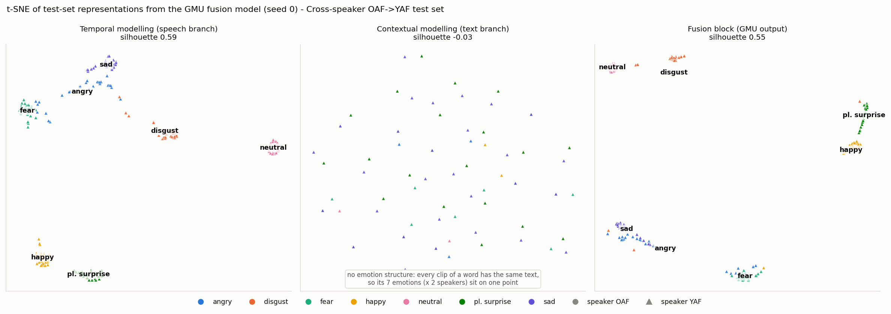
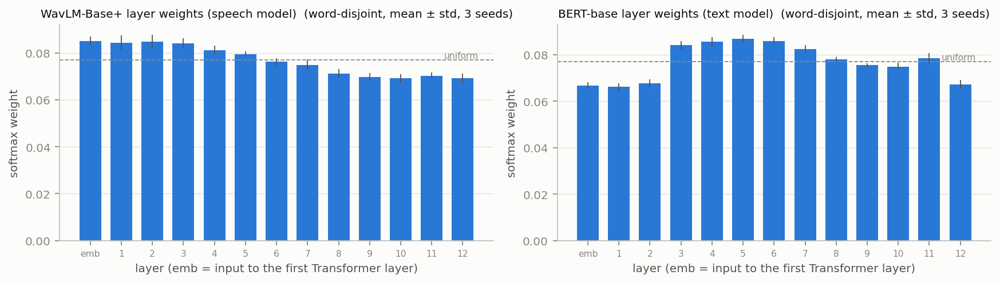

Summary. A speech model (frozen WavLM-Base+ features, BiGRU, attentive pooling), a text model (frozen BERT, BiGRU) and a gated multimodal fusion of the two were trained on TESS with a word-disjoint split, so no test word is heard in training. Speech-only reaches 99.9 % accuracy. Text-only is at exactly 14.29 % (chance), because in TESS every word is spoken in every emotion, so the transcript is independent of the label. Fusion matches speech-only (99.8 %). Across speakers (train on one actress, test on the other) accuracy falls to about 55 %: high-arousal emotions (angry, happy, pleasant surprise) are expressed differently by the two speakers. Neither fusion nor speaker normalisation changes that (10 seeds, all p > 0.1). Under heavy noise the gated fusion model tends to be more robust than speech-only (+8.7 points at 0 dB, p = 0.07) and clearly more robust than the same model with its text zeroed (+13.6, p = 0.015). A control with the wrong word's transcript shows this comes from the gated architecture, not from the text content. Concatenation fusion is significantly less robust.
The Toronto Emotional Speech Set (TESS) has 2,800 clips: two actresses (OAF, aged 64; YAF, aged 26) each say the carrier phrase "Say the word ___" with 200 target words in seven emotions (angry, disgust, fear, happy, neutral, pleasant surprise, sad). The classes are exactly balanced (400 clips each). Two properties of the corpus shape every result below:
Main protocol, word-disjoint: the 200 words are split 140 / 30 / 30 into train / validation / test (1,960 / 420 / 420 clips). Every split keeps both speakers and all emotions in equal numbers. A harder cross-speaker protocol trains and validates on one actress and tests on the other (and on unseen words), in both directions. All numbers are the mean ± standard deviation over three seeds.
Two problems in the Kaggle copy were fixed: the zip holds the corpus twice under folder names that differ only in
case (only one copy was used; the duplicates are byte-identical), and one file is misnamed OA_bite_neutral.wav
(the speaker is taken from the folder). One clip is stored at 96 kHz instead of 24.4 kHz; resampling handles it.
All three systems follow the block diagram of the assignment. Both encoders (WavLM, BERT) are frozen and their
features are cached once (scripts/extract_features.py). With 1,960 training clips, fine-tuning a 94 M
(WavLM) or 110 M (BERT) parameter network would overfit, and caching makes every training run take about a
minute. The trainable parts are small: 0.86 M parameters (speech), 0.56 M (text), 1.65 M (fusion).
| Block | Speech pipeline | Text pipeline |
|---|---|---|
| Preprocessing | Mono, resampled 24.4 → 16 kHz (WavLM's training rate; pitch, energy and spectral cues of emotion lie below 8 kHz). Leading/trailing silence trimmed at 30 dB below the peak. RMS normalised to a fixed level so recording-gain differences between sessions cannot be learned. Clips keep their full length (1.0-3.0 s after trimming); batches are padded and masked. | Transcript built from the file name: "Say the word <w>.". BERT's uncased WordPiece tokenizer lower-cases,
splits punctuation and adds [CLS]/[SEP] (7 tokens; 8 for the 10 words split into two word pieces). |
| Feature extraction time steps / tokens × features |
WavLM-Base+ (frozen), all 13 hidden layers mixed with learned softmax weights (as in SUPERB): 50 frames/s × 768. WavLM is pre-trained on 94k hours with masked prediction and denoising, and is among the strongest base-size models on the SUPERB emotion task. Baseline: 80-band log-mel spectrogram, 100 frames/s × 80. | BERT-base-uncased (frozen), all 13 layers mixed with learned weights: tokens × 768. Contextual word-piece embeddings are the standard input for text emotion models. |
| Temporal / contextual modelling | Linear 768 → 256, then a 2-layer BiGRU (128 units per direction), then attentive pooling to one 256-d vector. The BiGRU follows pitch and energy contours in both directions. Attention pooling lets the model weight the emotionally loaded part of the clip (the stressed target word) instead of averaging over silence and the carrier phrase. SpecAugment-style time masking regularises it. | Same block with a 1-layer BiGRU over the word pieces and attentive pooling to 256-d. A deeper model makes no sense for 7-token inputs. |
| Classifier | MLP 256 → 128 → 7 with GELU and dropout 0.3; cross-entropy with label smoothing 0.05. | |
Fusion. Speech and text are fused at the utterance level, after pooling, because the two sequences have unrelated
time axes (about 100 speech frames vs 7-8 word pieces). The main model uses a Gated Multimodal Unit (Arevalo et al., 2017):
h = z·tanh(Wss) + (1−z)·tanh(Wtt) with z = σ(Wz[s; t]).
The gate decides per example and per dimension how much each modality contributes, so the model can learn to ignore an
uninformative modality, and the mean of z is a readable measure of how much it relies on speech. A
concatenation layer is the baseline. Both branches and the fusion layer are trained jointly from scratch.
Training. AdamW (lr 10−3, weight decay 0.01), batch 32, up to 40 epochs with a cosine schedule, early stopping after 10 epochs without improvement in validation accuracy (ties broken by validation loss). Validation always uses held-out words of the training speaker(s), never the test speaker.
| Model | Word-disjoint (main) | Cross-speaker OAF→YAF | Cross-speaker YAF→OAF |
|---|---|---|---|
| Speech only (WavLM + BiGRU) | 99.9 ± 0.1 | 53.8 ± 2.5 | 55.2 ± 6.4 |
| Text only (BERT + BiGRU) | 14.3 ± 0.0 | 14.3 ± 0.0 | 14.3 ± 0.0 |
| Speech + text (GMU fusion) | 99.8 ± 0.4 | 48.4 ± 4.8 | 56.5 ± 6.0 |
| Ablations | |||
| Speech only, log-mel features | 99.8 ± 0.1 | 47.6 ± 5.9 | 35.6 ± 4.4 |
| Speech + text, concatenation fusion | 99.8 ± 0.1 | 56.8 ± 10.7 | 62.2 ± 6.0 |
| Speech + text, GMU, log-mel speech | 100.0 ± 0.0 | 52.2 ± 8.7 | 35.9 ± 6.9 |
| Speech only + speaker normalisation (Section 5) | 99.8 ± 0.1 | 52.5 ± 7.5 | 56.8 ± 5.9 |
| GMU fusion + speaker normalisation | 99.9 ± 0.1 | 54.9 ± 14.5 | 55.6 ± 9.0 |
| Controls for the fusion analysis (Section 4.2) | |||
| GMU fusion, text input replaced by zeros | 99.9 ± 0.1 | - | - |
| GMU fusion, transcript of a different word | 99.9 ± 0.1 | - | - |
Test accuracy (%), mean ± standard deviation over seeds 0-2. Chance is 14.3 %. Test sets: 420 clips
(word-disjoint) and 1,400 clips of the unseen speaker (cross-speaker). Macro-F1 follows the same pattern
(Results/accuracy_table.md).


| Recall (%) | angry | disgust | fear | happy | neutral | pl. surprise | sad |
|---|---|---|---|---|---|---|---|
| Speech only, word-disjoint | 100.0 | 100.0 | 100.0 | 100.0 | 100.0 | 99.4 | 100.0 |
| Speech only, cross-speaker | 6.7 | 81.7 | 82.2 | 15.0 | 87.8 | 19.4 | 88.9 |
| GMU fusion, cross-speaker | 20.0 | 70.6 | 91.7 | 3.3 | 78.9 | 27.8 | 75.0 |
Within the training speakers every emotion is close to 100 %. The only error type, pleasant surprise → happy, is the pair that shares positive valence and high arousal. The cross-speaker protocol shows the real ranking:
Fusion can only help when the second modality adds information the first one lacks, or when the first one becomes unreliable. TESS removes the first possibility by design, since the text is independent of the label. So the question becomes: does fusion help when speech is degraded? Three conditions were tested, with extra seeds wherever the 3-seed spread was as large as the effect.
(a) Clean speech, unseen words: no. Speech-only is at the ceiling (99.9 %), and fusion matches it (99.8 %: 0.3 clips fixed and 1.0 broken per seed out of 420). There is nothing left for text to fix, and the text has no label information anyway.
(b) Unseen speaker: no. With three seeds, concatenation fusion seemed to gain 3-7 points across speakers. Seven more seeds per model (Figure 6) show that this was seed noise. A single model's cross-speaker accuracy ranges from 41 % to 75 % depending only on the seed, because model selection can only use the training speaker (whose validation accuracy reaches 100 % within a few epochs). Over 10 seeds no fusion variant differs significantly from speech-only:
| Cross-speaker, 10 seeds | OAF→YAF | YAF→OAF | Difference to speech-only (Welch p) |
|---|---|---|---|
| Speech only | 54.7 ± 6.7 | 57.0 ± 9.3 | - |
| GMU fusion | 51.3 ± 7.3 | 55.1 ± 10.5 | −3.4 (0.29) / −1.9 (0.67) |
| Concatenation fusion | 54.2 ± 7.4 | 57.6 ± 5.5 | −0.5 (0.87) / +0.5 (0.88) |

(c) Noisy speech: this is the only place GMU fusion pulls ahead, and the gain grows as the speech degrades. White noise was added to the word-disjoint test clips at 20 to 0 dB SNR, WavLM features were re-extracted, and 10 seeds per model were evaluated (Figure 7). Two controls with the identical GMU architecture separate the contribution of the text from that of the architecture: one whose text branch only ever sees zeros, and one that always receives the transcript of a different word.
| Accuracy (%), 10 seeds | clean | 10 dB | 5 dB | 0 dB |
|---|---|---|---|---|
| Speech only | 99.9 | 92.3 ± 4.7 | 83.1 ± 7.7 | 60.5 ± 11.6 |
| GMU fusion (true transcript) | 99.9 | 93.7 ± 3.3 | 86.4 ± 6.0 | 69.2 ± 8.5 |
| GMU, transcript of a different word | 100.0 | 93.0 ± 5.8 | 83.6 ± 8.5 | 65.5 ± 11.9 |
| GMU, text replaced by zeros | 99.8 | 89.4 ± 8.0 | 77.9 ± 12.1 | 55.6 ± 13.1 |
| Concatenation fusion | 99.8 | 85.2 ± 10.7 | 69.8 ± 15.1 | 45.6 ± 15.6 |

Figure 7. Accuracy on noisy test speech; line = mean, band = ± std over 10 seeds.
Answer. Fusion helps most when the primary modality is unreliable and the second one is complementary. On TESS only the first condition can be created (with noise), and the measurable benefit there is architectural (the gate), not informational. Where the words themselves carry emotion (e.g. IEMOCAP, MELD, CMU-MOSEI) or come from ASR in noisy conditions, the same GMU design would be expected to show a real information gain. On TESS a correct experiment has to show it cannot.
| # | Clip | Protocol | True | Predicted | Seeds wrong | What the audio shows (Figure 3) |
|---|---|---|---|---|---|---|
| 1 | OAF_make_ps | word-disjoint | pl. surprise | happy (p = 0.95) | 1/3 | Pitch stays almost flat (about 170-200 Hz) through the target word, while OAF_make_happy rises to about 280 Hz. With little prosodic movement the clip is ambiguous between the two positive emotions. |
| 2 | OAF_hit_ps | word-disjoint | pl. surprise | happy (0.61) | 1/3 | Flat contour (about 180-200 Hz) through the phrase, where OAF_hit_happy rises to about 260 Hz on the target word. The model is unsure (0.61). |
| 3 | OAF_bite_ps | word-disjoint | pl. surprise | happy (0.53) | 1/3 | Gently falling contour on a short target word; a borderline case (confidence near 0.5). |
| 4 | YAF_thought_happy | OAF→YAF | happy | angry (0.96) | 3/3 | YAF's happy has a high pitch with little movement (about 250-300 Hz), in the same range as her angry version. A model that learned OAF's emotions apparently reads this as anger. |
| 5 | YAF_which_happy | OAF→YAF | happy | angry (0.96) | 3/3 | Same pattern; the error is systematic for the whole class (happy → angry in 39 % of cross-speaker cases). |
The word-disjoint errors are rare, unstable across seeds (1 of 3) and low-confidence: genuinely ambiguous clips. The cross-speaker errors are systematic and confident: the same mistake in every seed with p ≈ 0.96, which points to a mismatch between speakers rather than noise. TESS allows a controlled comparison here: Figure 3 sets each misclassified clip next to the same speaker saying the same word in the predicted emotion.



| Silhouette (cosine) | Temporal (speech) | Contextual (text) | Fusion |
|---|---|---|---|
| Word-disjoint | 0.95 | −0.02 | 0.98 |
| Cross-speaker OAF→YAF | 0.62 | −0.03 | 0.58 |
| Cross-speaker YAF→OAF | 0.31 | −0.03 | 0.27 |

Figure 5 raised the possibility that the cross-speaker problem is a shift: the unseen speaker's emotions still form separate clusters but land in the wrong place. The classic remedy is speaker-level mean and variance normalisation (CMVN): each WavLM layer is standardised with the mean and standard deviation of all frames of that speaker. No labels are used, but unlabelled audio of the test speaker is, which is acceptable when a new speaker's recordings are available before classification.
| Cross-speaker, 10 seeds | OAF→YAF | YAF→OAF | Difference to no normalisation (Welch p) |
|---|---|---|---|
| Speech only | 54.7 ± 6.7 | 57.0 ± 9.3 | - |
| Speech only + speaker normalisation | 57.5 ± 5.8 | 54.3 ± 6.0 | +2.8 (0.33) / −2.8 (0.44) |
| GMU fusion + speaker normalisation | 57.2 ± 9.3 | 59.2 ± 7.5 | −0.3 (0.94) / +4.9 (0.12) vs normalised speech |
It does not help. The normalisation was applied correctly (each speaker's features have mean 0 and standard deviation 1 afterwards), and within-speaker accuracy is unchanged (99.8 %). The reason is visible in Figure 5: the mismatch is not a global offset. The arrangement of the emotion clusters differs between the two actresses (YAF's angry lies where OAF's fear lies), and a per-dimension shift and scale cannot reorder clusters. Closing the gap needs more speakers in training, which TESS cannot offer, or a few labelled examples from the new speaker.
Code, per-clip predictions, training logs and every table are in the repository
(python scripts/run_all.py, scripts/run_seed_study.py, scripts/run_noise_study.py).